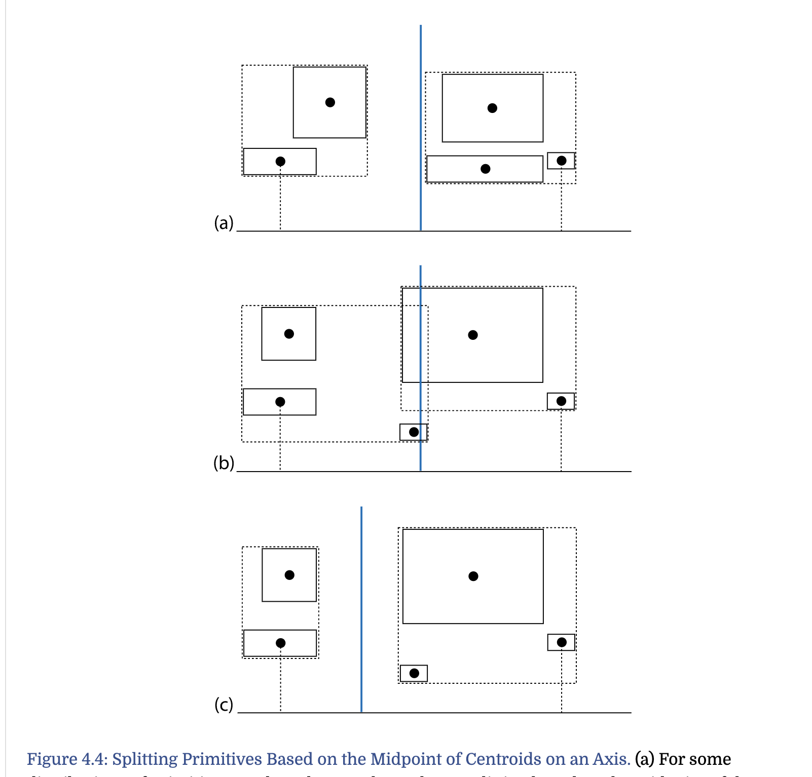

PBR Primitives and Intersection Acceleration
basic thoughts
- spatial subdivision ---- kdTree
- object subdivision ---- BVH object subdivision is based on progressively breaking the objects in the scene down into smaller sets of constituent objects.
BVH
basic principle
根据object的bounding box分布，把物体划分成树的结构。
BVH construction ways
middle
- choose the partition axis has the largest range of the centroids of the primitives’ bounding boxes
- split primitives based on the midpoint of centroid on chosen axis 
equal counts
- split primitives based on mid count of sorted centroid on chosen axis
surface area heuristic (SAH)
- based on cost
- probability based on surface area（bounding box 的表面积）
- each primitive is placed in a bucket along the axis based on the centroid of its bounds

- cost each cost for each bucket boundary 这里假设，遍历树的cost是0.125，树节点求相交的cost是1.0
linear bounding volume hierarchies
- Mortan code 把各个维度的坐标(整数值)转换成2进制编码 Mortan编码的好处是，index接近或者说高bit位相同的分布在临近的区域
- hierarchical linear bounding volume hierarchy (HLBVH) 低层次的树采用Morton-curve-based clustering，高层次的树采用surface area heuristic 简单的说用Morton来做各个分桶里的BVH，用SAH做桶的BVH

compact BVH

{kind=link}
{kind=link}
{kind=link}
{kind=link}
{kind=link}
{kind=link}
{kind=link}
{kind=link}
{kind=link}
{kind=link}
{kind=link}
{kind=link}
traversal
从root节点开始判断 for more efficiently, 根据ray相对于axis的朝向决定优先和左子节点还是右子节点求交
{kind=link}
Kd-Tree
BSP and kd-tree
- Binary space partitioning (BSP) trees adaptively subdivide space with planes.
- Two variations of BSP trees are kd-trees and octrees.
{kind=link}
tree representation
{kind=link}
tree construction
- built with a recursive top-down algorithm